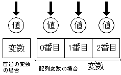

JavaScript初級者から中級者になろう
一章第一回 オブジェクトとは
オブジェクト
JavaScriptではとても重要な要素であるオブジェクトですが、初心者の人はこれをあまり知りません。これを知ることが「中級者」への第一歩だといえるでしょう。
さて、オブジェクトとは、1つの変数の中に複数の値を代入することができるものです。実はこれは厳密には正しい説明とはいえず、奥の深いオブジェクトの表面を見ているだけにすぎないのですが、ここではひとまず理解するためにこのような説明とします。
実はこの説明は、基礎第六回で解説した「配列変数」と同じ説明です。実は配列変数はオブジェクトの一種なのですが、それについては深く考えずにまずはオブジェクトとはどんなものかを説明します。
配列変数は、この図のように、ひとつの変数が複数の箱（要素といいました）を持ち、それぞれを番号で区別するというものでした。
 一方、オブジェクトは、この図のようになっています。
一方、オブジェクトは、この図のようになっています。
どういうことかというと、オブジェクトの中にある複数の箱は、ひとつひとつが変数のように名前を持っています。
具体的なサンプルを見てみましょう。
var obj = new Object();
obj.aaa = "test";
obj.b = 123;
alert(obj.aaa);
alert(obj.b);「test」「123」が表示されます。
最後の2行では、「obj.aaa」「obj.b」というものを表示しています。
さて、この場合変数objがオブジェクトです。変数objに代入している文は、次のようになっています。
var obj = new Object();この「new Object()」がオブジェクトを表しています。「new」は実は演算子の一種で、「新しいオブジェクトを作ってobjに代入する」という意味です（newについて詳しくは第九章で説明します）。
さて、こうしてできる新しいオブジェクトは、実は箱を1つも持っていません。中身がない状態です。そこで、新しい箱を作ってやる必要があります。それが、次の2文です。
obj.aaa = "test";
obj.b = 123;「obj.aaa」と「obj.b」に何の変哲もない値を代入しています。この「obj.aaa」や「obj.b」が変数objのもつ箱です。つまり、objがもつaaaという箱に"test"を代入して、次にobjがもつbという箱に123を代入しています。
オブジェクトは柔軟なので、objはもともとaaaとかbとかいう箱を持っていなかったのですが、箱に代入しようとした時点で新しい箱が自動的に生成されます。
このような、オブジェクトが持つ箱のことをプロパティといいます。きわめて基本的な言葉なので、ぜひ頭に入れておきましょう。
さて、このプロパティの表し方は、次のようにします。
オブジェクト.プロパティ名オブジェクトとプロパティ名が「.」（ピリオド）でつながっています。
つまり、上のサンプルで「obj.aaa」は「オブジェクトobjのプロパティaaa」、「obj.b」は「オブジェクトobjのプロパティb」を表していたことになります。これらは、普通の変数と同じように扱うことができます。
ただし、新しく「変数」を作っているわけではないので、代入するときに「var」をつけたりはしません。
これで上のサンプルは分かると思います。代入の2行ではobjのプロパティaaa,bに値を代入し、次の2行でそれを表示しているというだけです。
また、プロパティの表し方には別の書き方があります。次のような書き方です。
オブジェクト名["プロパティ名"]オブジェクトのあとに「[ 〜 ]」でプロパティ名を囲んでくっつけています。しかし、ここで注意してほしいのが、今回はプロパティ名が文字列だということです。
つまり、「obj.aaa」や「obj.b」は「obj["aaa"]」や「obj["b"]」のようにも書けるということです。この形は、プロパティ名が変数に入っている場合などに役立ちます。
また、この書き方は基礎第六回で紹介した配列変数の添字の書き方と同じですね。実は、配列変数も特殊なオブジェクトなのです。例えばarr.lengthで配列の長さが得られますが、これは配列のlengthというプロパティを参照していたのです。配列はオブジェクトとしては特殊なので、配列が操作されるとプロパティlengthが自動で書き換わるのです（実はこの説明も厳密には正しくないのですが、そういうものだと思っておきましょう）。
とりあえず、オブジェクトというものに関する解説はこれで終了します。